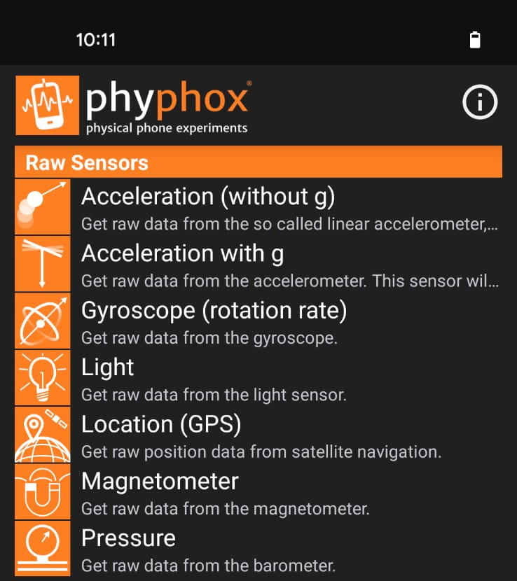

Teaching Module: Seeing Sound Waves in a Train Tunnel
Module Title: Investigating Pressure Waves in Railway Tunnels Using Mobile-Based Sensors
Learning Objectives:
By the end of this module, students will be able to:
- Explain how a train acts like a piston to create pressure waves (compressions and rarefactions).
- Use a smartphone sensor (barometer) and the Phyphox app to collect real-time graphical data.
- Analyze a pressure vs. time graph to identify key wave features: forward compression wave, and reflected pressure waves.
- Relate the physical properties of the tunnel and train speed to the resulting pressure profile.
1: Conceptual Background (What are we looking for?)
Pre-Activity Questions (Inquiry Starters):
1. When you are travelling on a train and the train enters a long tunnel, you sometimes feel a sensation in your ears, often called an "ear pop." What causes this physical feeling?
2. Have you ever felt similar sensation when you travel by a car through a tunnel?
3. Imagine the train entering the tunnel. What happens to the air in front of the train?
4. Since the tunnel is like a long pipe, what might happen to the compression wave when it reaches the end of the tunnel?
2: Data Acquisition (Using Phyphox)
Tools Required: Smartphone with a barometric sensor, Phyphox App.
A. Setting up Phyphox:
- Install the Phyphox app on the smartphone.
- Open the app and select the Pressure sensor.
- Ensure the settings are configured to record pressure (in hPa or Pascals) over time.
[Image: Phyphox app interface showing Pressure sensor selection]
B. Data Recording Steps:
- The student (or the teacher, if doing a demo) should be positioned inside the train coach (preferably near a window, or at a fixed location).
- Start Recording: press the record/play button on the Phyphox app when you want to start the recording.
- Manual Logging: While the data is recording, note down the manual timestamps for when the train completely enters the tunnel and when it completely exits the tunnel. (This helps correlate the data points with the physical event; tunnel entry and exit times can be recovered from the data recorded on phyphox later by identifying the time of pressure rise and pressure normalisation after train exit).
You can also use speedometer app on separate device to measure the average speed of the train when it enters the tunnel. this will help you correlate the data to other parameters in the observations. - End Recording: Stop the recording process once the train has exited the tunnel and the pressure returns to normal.
- Save Data: (click 3 dots on the upper-right corner of the recording window to see the export option: Export the pressure (hPa) vs. time (s) data, typically as an Excel or a CSV file, for later analysis.
[Image: Phyphox export options]

3: Data Analysis (Plotting and Cleaning)
Goal: Transform the raw numbers into a meaningful visual graph.
- Preparation: Import the saved Excel/CSV data file into the following Python notebook. This plots the Data and helps you interact with the data.
[Open In Colab] - Initial Plotting: Plot the raw data of Pressure (Y-axis) versus Time (X-axis).
- You can interactively browse through the graph produced so use it to identify peaks and max and min pressure of peaks.
4: Data Interpretation and Inquiry
Analysis Questions:
1. Identifying the Initial Event: Look at the start of the graph. Where does the pressure first rise sharply? This steep rise is the Forward compression wave. Based on the theory, what caused this rapid pressure increase?
2. Compression and Rarefaction: Identify the highest pressure point on the graph. This represents the peak of the compression. Next, identify the lowest pressure point (the deepest dip). This negative pressure region corresponds to the Backward expansion wave (rarefaction).
3. Echoes in the Data: Look at the smaller peaks and valleys that occur between the major compression and rarefaction. These represent the Reflected pressure waves. How does this observation confirm the idea that the tunnel acts like a long pipe where waves can reflect (like echoes)?
[Image: Graph showing forward compression wave, reflected waves, and rarefaction]

4. Effect of Speed (Connecting Data to Variables): Compare the graphs from a slow train entry versus a fast train entry (if multiple datasets are available). The sources found that steeper pressure rises correlated with higher entry speeds. Why would a faster train cause the pressure to rise more steeply?
5. Effect of Length: The sources noted that longer tunnels showed a broader pressure plateau. If the flat, high-pressure section of the graph is the "plateau," how could you use the duration of this plateau to estimate the tunnel's length?
6. The Open Window Observations: The study found that similar pressure variations were observed in non-AC coaches with open windows and high speed. The pressure change in these train speed below ~60kmph was observed to be minimal. Why did the pressure not change much in these coaches?
6: Conclusion and Extension
1. Summary: Write a short paragraph explaining how measuring pressure changes in a train tunnel helped you understand longitudinal pressure waves (sound waves) better than just reading about them in a textbook. (Focus on the finding that the waveforms align well with predictions from wave theory, showing how theory matches reality.)
2. Extension: How could this experiment be improved? What other variables (like coach type or atmospheric temperature) might affect the pressure profile?